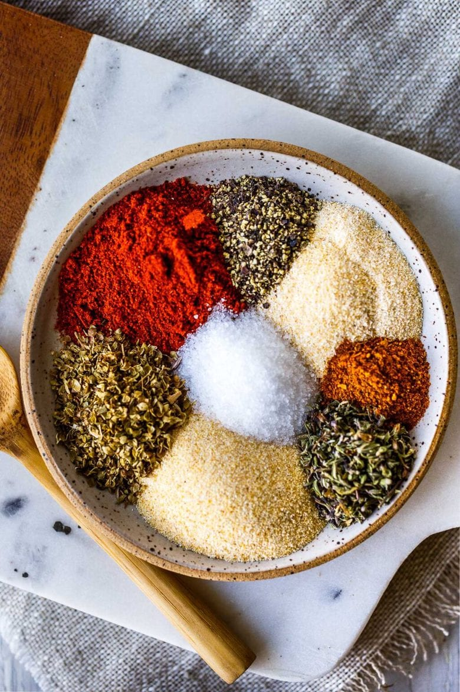

Cajun Seasoning

Description
Courtesy of @thehealthfulhuman on Instagram
serving Size:
Ingredients
- 2 tsp. garlic powder
- 2 tsp. paprika
- 1 1/4 tsp. oregano
- 1 1/4 tsp. thyme
- 1 tsp. onion powder
- 1 tsp. cayenne powder
- 1 tsp. salt
- 1/2 tsp. smoked paprika
- 1/2 tsp. black pepper
- 1/2 tsp. red pepper flakes
Directions
- In a bowl, stir together the garlic powder, paprika, oregano, thyme, onion powder, cayenne powder, salt, smoked paprika, black pepper, and red pepper flakes.
- Store in a sealed jar in a cool, dry place.